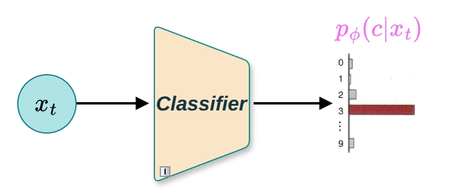
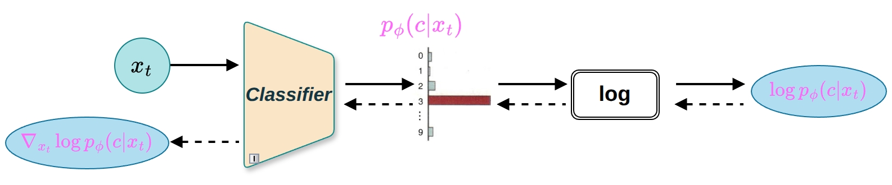
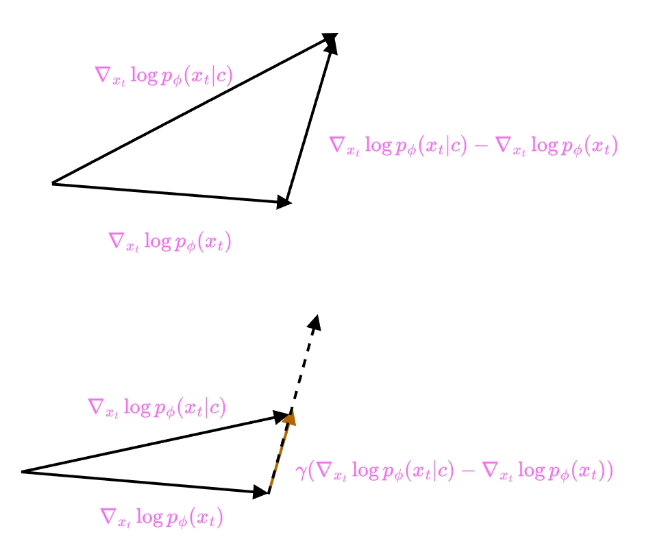
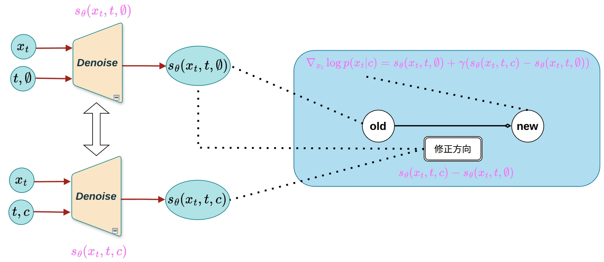

在标准的CDDPM（条件去噪扩散概率模型）方法中，条件信息直接注入到去噪网络中，实现条件生成。然而，还有两种重要的条件生成引导方法:Classifier Guidance（分类器引导）和Classifier-Free Guidance（无分类器引导）。这两种方法通过不同的机制来增强条件生成的控制能力，并在采样过程中提供更灵活的条件控制。
本章将从基于得分函数的形式化表述出发，详细介绍这两种引导方法的基本原理、实现方式和优缺点。
在深入讨论条件得分函数之前，我们先回顾一下得分函数（Score Function）的基本概念。
对于概率分布 \(p(x)\)，得分函数定义为关于 \(x\) 的对数概率梯度:
\[\nabla_x \log p(x)\]
在扩散模型中，我们学习的是噪声条件得分函数 \(s_\theta(x_t, t) = \nabla_{x_t} \log p(x_t)\)，它描述了在噪声水平 \(t\) 下数据分布的对数概率梯度。通过预测噪声 \(\epsilon_\theta(x_t, t)\)，我们可以间接学习得分函数，因为:
\[\nabla_{x_t} \log p(x_t) = -\frac{\epsilon_\theta(x_t, t)}{\sqrt{1 - \bar{\alpha}_t}}\]
现在，我们将得分函数的概念扩展到条件分布。我们的目标是学习条件得分函数 \(\nabla_{x_t} \log p(x_t|c)\)，即在任意噪声水平 \(t\) 下，给定条件 \(c\) 时条件模型的对数概率梯度。
根据贝叶斯定理，我们可以将条件概率 \(p(x_t|c)\) 表示为:
\[p(x_t|c) = \frac{p(x_t) p(c|x_t)}{p(c)} \tag{1}\]
接下来，我们计算关于 \(x_t\) 的梯度:
\[\begin{aligned} \nabla_{x_t} \log p(x_t|c) &= \nabla_{x_t} \log \frac{p(x_t) p(c|x_t)}{p(c)} \\ &= \nabla_{x_t} \left[ \log p(x_t) + \log p(c|x_t) - \log p(c) \right] \\ &= \nabla_{x_t} \log p(x_t) + \nabla_{x_t} \log p(c|x_t) - \nabla_{x_t} \log p(c) \tag{2} \end{aligned}\]
注意到在中间的表达式中出现了 \(\nabla_{x_t} \log p(c)\)，但由于 \(p(c)\) 中不包含 \(x_t\)，因此 \(p(c)\) 关于 \(x_t\) 的梯度为零:
\[\nabla_{x_t} \log p(c) = 0 \tag{3}\]
由此，我们得到最终的数学表达式:
\[\nabla_{x_t} \underbrace{\log p(x_t|c)}_{\text{条件得分}}= \underbrace{\nabla_{x_t} \log p(x_t)}_{\text{得分}} + \underbrace{\nabla_{x_t} \log p(c|x_t)}_{\text{对抗梯度}} \tag{4}\]
要点:最终推导的结果表明，条件得分函数可以分解为两部分: 1. 无条件得分:\(\nabla_{x_t} \log p(x_t)\) - 表示数据本身的分布梯度 2. 对抗梯度:\(\nabla_{x_t} \log p(c|x_t)\) - 表示分类器对条件信息的梯度响应
这为后续的两种引导方法提供了理论基础。
我们仔细查看公式4可以发现， 无条件得分:\(\nabla_{x_t} \log p(x_t)\) - 这一项可以使用预测得分函数的神经网络\(s_\theta(x_t, t)\) 来计算
那么对抗梯度:\(\nabla_{x_t} \log p(c|x_t)\)呢？我们先观察\(p(c|x_t)\)这一项，通过判别模型，很容易观察出:
将时刻 \(t\) 的噪声图像 \(x_t\) 作为输入，并输出类别 \(c\) 的概率 \(p(c|x_t)\)。
于是，我们可以用一个神经网络\(p_\phi(c|x_t)\)来拟合，如图1所示。

图1 噪声分类器:将噪声图像 \(x_t\) 作为输入，输出类别 \(c\) 的概率 \(p_\phi(c|x_t)\)
又因为该过程跟扩散模型其实不相关，所以这个网络可以单独训练（预训练）
综上所述:分类器是一个能够对数据进行分类的预训练神经网络
但是，这并不是我们想要的\(\nabla_{x_t} \log p(c|x_t)\)，那么怎么由分类器\(p_\phi(c|x_t)\)得到\(\nabla_{x_t} \log p(c|x_t)\)呢？答案也很简单:梯度反向传播。
如图2所示，\(\nabla_{x_t} \log p(c|x_t)\) 显示了在当前 \(x_t\) 下，类别 \(c\) 的对数似然增加最快的方向。

图2 对抗梯度:通过梯度反向传播从分类器 \(p_\phi(c|x_t)\) 得到 \(\nabla_{x_t} \log p(c|x_t)\)，表示类别 \(c\) 的对数似然增加最快的方向
因此，如果沿着 \(\nabla_{x_t} \log p(c|x_t)\) 的方向更新 \(x_t\)，那么更新后的图像被分类为类别 \(c\) 的概率会更高。
为了引入细粒度控制，使模型能够鼓励或抑制对条件信息的考虑，Classifier Guidance通过超参数 \(\gamma\) 对噪声分类器的对抗梯度进行缩放，这样就能调整分类器的贡献度。Classifier Guidance下学习的得分函数可以总结为:
\[\nabla_{x_t} \log p(x_t|c) = \nabla_{x_t} \log p(x_t) + \gamma \nabla_{x_t} \log p(c|x_t) \tag{5}\]
权重 \(\gamma\) 是人为设定的值（超参数），用于调整分类器向类别 \(c\) 方向引导的程度。\(\gamma\) 值越大，条件 \(c\) 的作用就越显著。使用表示推断得分的神经网络 \(s_\theta(x_t, t)\) 和表示分类器的 \(p_\phi(c|x_t)\)，可以将公式 (5) 改写为如下形式:
\[\nabla_{x_t} \log p(x_t|c) \approx s_\theta(x_t, t) + \gamma \nabla_{x_t} \log p(c|x_t) \tag{6}\]
超参数 \(\gamma\) 控制模型对条件信息的关注程度:
直观理解:较大的 \(\gamma\) 值会增强条件信息的引导作用，使生成的样本更符合条件 \(c\)，但可能会牺牲样本的多样性。
如图3所示，给出了常规的扩散模型（得分函数）与分类器相结合，并通过引入权重参数调整得分函数的模型架构。
图3 Classifier Guidance架构:常规的扩散模型（得分函数）与分类器相结合，通过权重参数 \(\gamma\) 调整分类器的贡献度
分类器 + 引导公式，与常规的扩散模型相结合，作为条件扩散模型来生成数据，这就是分类器引导的核心思想，即所谓的Classifier Guidance。
Classifier Guidance的一个显著缺点是依赖于单独学习的分类器:
那么有没有办法去掉分类器呢，这就是我们下一节需要介绍的Classifier-Free Guidance。
分类器引导可以生成强调条件的数据。然而，分类器引导在实际应用中存在一个问题，即需要单独准备一个分类器。针对分类器引导的这一缺点进行改进的技术是无分类器引导。
为了推导Classifier-Free Guidance下的得分函数，我们首先从方程 (4) 重新整理得到:
\[\nabla_{x_t} \log p(c|x_t) = \nabla_{x_t} \log p(x_t|c) - \nabla_{x_t} \log p(x_t) \tag{6}\]
然后将此式代入方程 (5)，得到:
\[\begin{aligned} \nabla_{x_t} \log p(x_t|c) &= \nabla_{x_t} \log p(x_t) + \gamma (\nabla_{x_t} \log p(x_t|c) - \nabla_{x_t} \log p(x_t)) \\ &= \nabla_{x_t} \log p(x_t) + \gamma \nabla_{x_t} \log p(x_t|c) - \gamma \nabla_{x_t} \log p(x_t) \\ &= \gamma \underbrace{\nabla_{x_t} \log p(x_t|c)}_{\text{条件得分}} + (1 - \gamma) \underbrace{\nabla_{x_t} \log p(x_t)}_{\text{无条件得分}} \tag{7} \end{aligned}\]
前面我们使用贝叶斯定理进行了式子的展开，最后得到了公式 (7)。根据公式 (7)，可以推导出无分类器引导。公式 (7) 的意思是从点 \(\nabla_{x_t} \log p(x_t)\) 出发，沿着 \(\nabla_{x_t} \log p(x_t|c)\) 的方向前进了 \(\gamma\) 倍的距离，如图4所示。

图4 公式 (7) 的可视化:从无条件得分 \(\nabla_{x_t} \log p(x_t)\) 出发，沿着条件得分 \(\nabla_{x_t} \log p(x_t|c)\) 的方向前进了 \(\gamma\) 倍的距离
公式 (7) 中的 \(\nabla_{x_t} \log p(x_t)\) 和 \(\nabla_{x_t} \log p(x_t|c)\) 分别表示无条件得分和条件得分。它们可由以下两个神经网络进行推断:
不过，准备两个模型很麻烦。由于学习两个独立的扩散模型成本高昂，Classifier-Free Guidance采用了一种优雅的解决方案:将条件扩散模型和无条件扩散模型一起学习为一个单一的条件模型。即使用一个条件得分推断器 \(s_\theta(x_t, t, c)\)，并按如下方式建模:
这里我们用 \(\emptyset\) 表示“无条件”对应的类别。条件 \(c\) 可以被嵌入层变换为向量，但当类别为 \(\emptyset\) 时，它会被变换为“零向量”，使其不包含任何信息。根据以上信息，无分类器引导的数学式可以表示成如下形式:
\[\nabla_{x_t} \log p(x_t|c) \approx s_\theta(x_t, t, \emptyset) + \gamma (s_\theta(x_t, t, c) - s_\theta(x_t, t, \emptyset)) \tag{8}\]
如图5所示，使用得分函数的神经网络实现的无分类器引导的条件生成模型。

图5 Classifier-Free Guidance架构:使用得分函数的神经网络实现的无分类器引导的条件生成模型
实现方式:在训练过程中，无条件扩散模型可以通过用固定常数值（如零或空向量）替换条件信息来查询。这本质上是对条件信息执行随机dropout（通常dropout率在10%-20%之间）。
优势: - 无需额外模型:只需要训练一个条件扩散模型 - 训练简单:通过条件dropout自然实现 - 计算高效:在采样时不需要运行额外的分类器
在Classifier-Free Guidance中，\(\gamma\) 参数同样控制模型对条件信息的关注程度:
直观理解:当 \(\gamma > 1\) 时，模型会降低生成不使用条件信息的样本的概率，有利于明确使用条件信息的样本。这也会以牺牲样本多样性为代价，生成准确匹配条件信息的样本。
| 特性 | Classifier Guidance | Classifier-Free Guidance |
|---|---|---|
| 需要额外模型 | 是（需要单独训练分类器） | 否（单一条件模型即可） |
| 训练复杂度 | 较高（需要训练两个模型） | 较低（只需训练一个模型） |
| 采样复杂度 | 较高（需要运行两个模型） | 较低（只需运行一个模型） |
| 实现方式 | \(\nabla_{x_t} \log p(x_t) + \gamma \nabla_{x_t} \log p(c\|x_t)\) | \(\gamma \nabla_{x_t} \log p(x_t\|c) + (1-\gamma) \nabla_{x_t} \log p(x_t)\) |
| 灵活性 | 需要专门设计噪声分类器 | 可通过条件dropout统一训练 |
| 应用场景 | 已有预训练分类器的情况 | 从头训练或需要更好控制的场景 |
Classifier Guidance和Classifier-Free Guidance都是实现条件扩散模型的有效方法，它们通过不同的机制来引导生成过程:
Classifier Guidance:利用单独训练的分类器提供对抗梯度，增强条件控制。需要额外的分类器模型，训练和采样复杂度较高。
Classifier-Free Guidance:通过条件dropout在单一模型中同时学习条件和无条件得分函数，实现更灵活的控制。只需训练一个模型，实现简单高效。
两种方法都为条件生成提供了灵活的控制机制，使得我们可以根据具体需求在生成质量和多样性之间找到最佳平衡点。
Ho, J., Jain, A., & Abbeel, P. (2020). Denoising diffusion probabilistic models. Advances in Neural Information Processing Systems, 33, 6840-6851.
Dhariwal, P., & Nichol, A. (2021). Diffusion models beat gans on image synthesis. Advances in Neural Information Processing Systems, 34, 8780-8794.
Ho, J., & Salimans, T. (2022). Classifier-free diffusion guidance. arXiv preprint arXiv:2207.12598.
《深度学习5:生成模型》
Understanding Diffusion Models: A Unified Perspective. arXiv preprint arXiv:2208.11970. https://arxiv.org/abs/2208.11970
深度学习入门5：生成模型